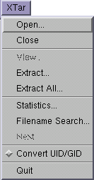

The main menu has ten options for operations on the selected files and the archive file as a whole.

Open..., open another tar archive. A standard file dialog box is displayed and you are prompted to choose a new file. The directories in the file selection box are refreshed each time it is displayed.
Close..., close the currently open tar archive.
View..., applies to files in the tar archive. Selected files are displayed using either the internal viewer or an appropriate external program. Files are mapped to external programs using the XTar mappings resource - you can configure an external program to launch depending on the filename ending.
Extract..., allows you to extract selected files & directories. A file dialog box appears and you are prompted for a location to save the selected files to. Note: if you select only one file, then the file will be saved to the location you choose without its full pathname; if you select more than one file then the files will be saved with their full pathname.
Extract All..., allows you to extract the contents of the entire archive. A file dialog box appears and you are prompted for a location to extract the archive to.
Statistics..., opens the statistics window and displays information about the archive, such as its size and the number of files it contains.
Filename Search..., opens a prompt dialog and requests a regular expression to match against a filename in the archive. This option can also be selected by pressing the '/' key, with the cursor in the file list.
Next, searches for the next occurence of the previous regular expression. This can also be achieved by pressing the 'n' key.
Convert UID/GID, is useful if the tar file was created on your machine. It converts the user and group numbers into their corresponding names on your system.
Quit, closes the application down.
Go back to the index or on to the Set Attributes menu.